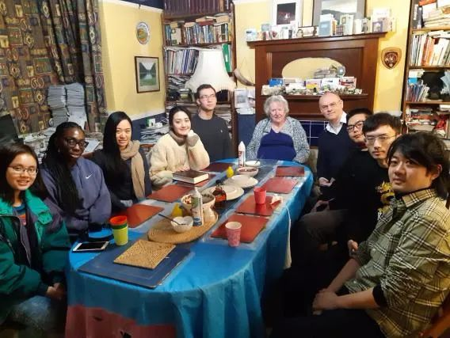
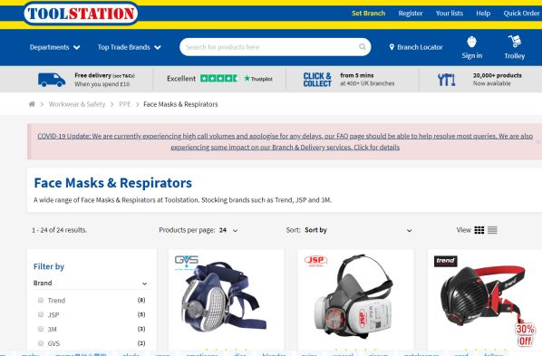
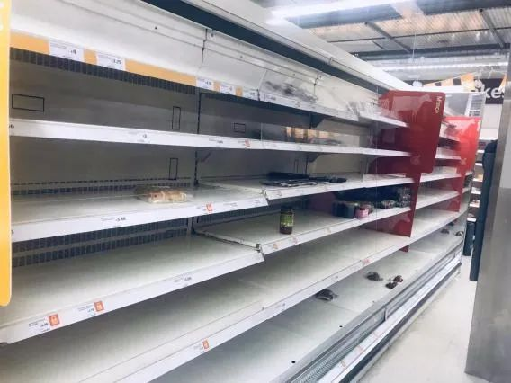
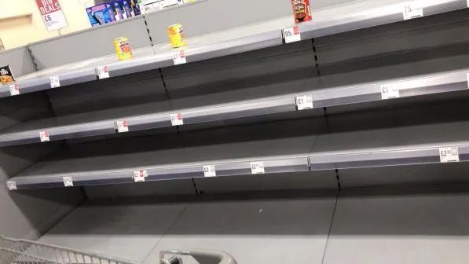
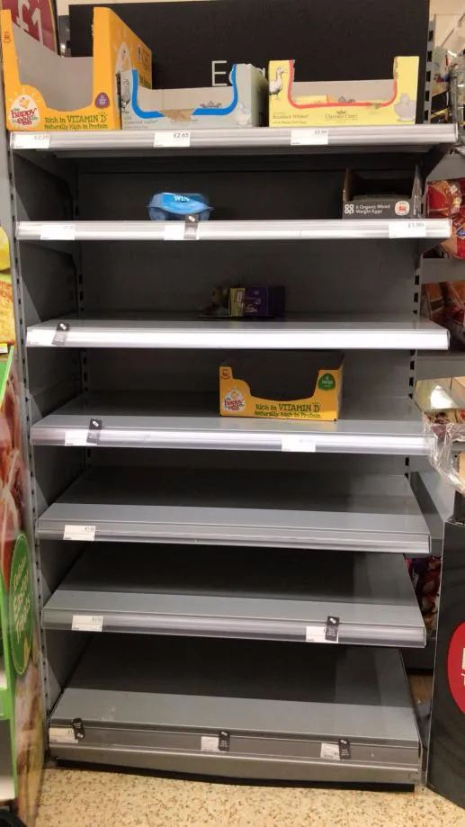
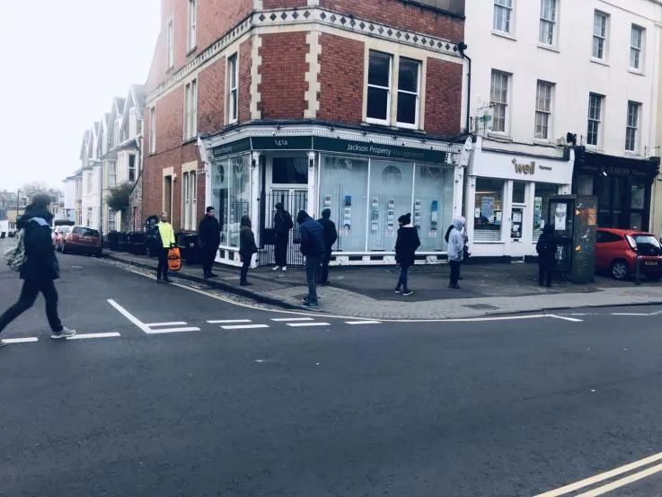
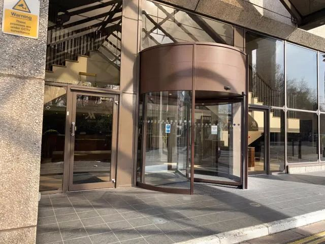

亲历英国抗疫：华人胆战心惊，老外跟风囤货
原文链接 备份链接 意大利确诊数破千时，大部分英国人还在隔岸观火，有人甚至拿新冠病毒开玩笑。如今英国人聚集的社交网络上多的是祈祷上帝保佑的推文。有人调侃说，老外都跟在华人后面逛超市，华人买什么他们就买什么 文 |《财经》驻英国特约作者 文 …

我担心的是英国人遏制不住向往自由心， 不少的英国人依然我行我素，四处溜达、遛狗、遛球、遛娃。
文 | 小 麻
“什么？我现在在英国？病毒？中国有病毒？全球都有病毒？我怕是在做梦吧？”
三周前我参加了一场当地足球赛，摔倒在地，头被撞了一下短暂失忆后醒来，脑子里是上面那些反应。
可惜，那不是一场噩梦。
我是一名“老”留学生，以前在国内留学教育培训机构里当老师。大学毕业17年后，我又当学生了，算是实现人生梦想吧。

2019年9月，我带着女儿和老婆到英国，开始英伦三岛深造的日子。然而，看来我的求学愿望再次被病毒诅咒——17年前大学毕业时我遇到的是非典。
中国疫情？上帝保佑！但离我们很远
我们在布里斯托的郊区住。度过了最早的适应期，我和这边的同学变熟悉了，女儿麻花也送去了幼儿园， 我们开始认识很多当地人，固定参加一些本地聚会， 社交生活慢慢走上正轨，娱乐生活也渐渐丰富多彩。


第一次在海外过春节，却听到了祖国遭受新冠病毒威胁的坏消息。十分担心国内的疫情，挂念国内的亲人和朋友。我准备买口罩寄到国内，没想到收到卖方电话，英国对口罩实施禁运政策（各种原因复杂），我网上买的几千个口罩都被延期发货了。怀着无比复杂的心情，只能默默祈祷疫情早日过去。 好在国内的政策给力，一切慢慢变好。

TOOLSATION网站上的口罩都已售罄， 只剩呼吸器
国内疫情紧张的二月，英国已经有数例输入性病例，我和英国人聊天，大家对中国表示担心，但很多人感觉病毒和自己的生活很遥远，大街上没有任何人戴口罩，也没有歧视中国留学生的事件，整体生活环境对中国人还是很友好的， 麻花幼儿园老师的亲切笑脸， 英国当地邻居的热情好客，都让我们暂时忘掉了不安。

邻居小姑娘Yvie和麻花
偶尔会有几个英国老头问我怎么看这个病毒，他们会不会有危险， 我告诉他们需要特别小心，因为病毒尤其对老年人很不友好， 他们笑答：“没啥好怕， 老天自有安排”。到英国病例开始增加到数百， 我所在城市也开始有病例出现的二月底，依然没有任何人戴口罩， 各种party， 学校聚会， 夜场到了凌晨也人满为患，排队的小年轻们都排到了门外几十米远。
因为瑞典环保愤怒小妹格蕾塔桑伯格来到了布里斯托，2月28日这里举行了三万人的大游行，现场可谓人山人海、群情激昂啊，我躲在远处, 无可奈何。


发生歧视中国留学生事件
到了三月，欧洲国家防中国、防韩国、防伊朗，却没想到自家的后院着了大火， 病毒很快在浪漫奔放的意大利肆虐，并以迅雷不及掩耳之势席卷英国。
针对中国留学生的歧视事件开始出现并增加，我在某种程度能理解外国人的害怕， 但害怕不等于歧视。
很多外国人不敢在公交车上挨着中国留学生坐，如果中国人戴上口罩， 就有各种奇葩人士前来挑衅。前几天，有外国人对着戴口罩的中国留学生故意大声咳嗽， 被我这个同学一阵怒骂。
意大利旅游回来的大量英国人测试呈阳性，英国人终于开始接受病毒来到身边的事实。随后约翰逊首相提出了“全员免疫” 的策略。
我询问当地英国人，包括英国的医生， 他们对此的态度居然是认可！惊了我的三观。
我果断在三月初就给孩子请假不再去幼儿园，尽管幼儿园老师一再强调“请尽快送来， 学校是安全的， 长期不来学校影响将来的入学记录”，但在我眼里， 她们那温柔的呼喊声，热情的招手却如同“寂静岭”般诡异。
随着“全员免疫”政策在国内外媒体的发酵，这里的留学生如同惊弓之鸟， 微信群里的同学们纷纷惊慌了， 很多同学开始准备逃回国内躲避。
我在冷静思考后选择不回国，并做好了长期留守的准备。 一是因为十七年前非典“跑毒”的悲催经历依然历历在目，二是回国路上危险重重， 三是不想回去给国内添乱。
囤货、停业、保持距离
既然做好了长期留守的准备， 我们决定立刻出门囤货，这时出门外面的气氛已经大为不同， 超市里的货物居然很多都被抢购一空， 尤其是鸡蛋、 面包、卫生纸三样极为枪手。鸡蛋面包可以理解，但是抢卫生纸是什么鬼？！病毒来了所以排泄更多吗？

牛奶只剩全脂的、英国人很少人喝全脂牛奶

面包货架空了

罐头和能长期保存的意大利面最为抢手

长盒的鸡蛋最便宜， 一早就没有了， 剩下的只有四个装的高端鸡蛋， 因为贵， 没多少人买

一大早去超市门外排队
抢归抢， 这时候能看出不列颠人民整体素质还是挺高的，之前媒体报道了一个故事，有老人到超市什么必须物资都买不到，这家超市决定，每天早上第一个小时的时间, 只为老人开放。
这张令人心酸照片引起了英国对老年人的同情
大街上人少了很多， 但是依然没有人戴口罩。
接下来英国政府采取特别严厉的措施来抵抗病毒， 学校、酒吧、餐厅、酒店、大型活动全部停止了，在“你们可能会失去心爱的人” 和“全国60%的人都会感染” 口号震撼下的英国人， 这下全都老实在家待着了。
昨晚， 英国政府再次颁布最新的工资补助措施，不管是否非法移民， 全部免费诊治。英国真的严阵以待了！

闹市区大街上几乎没人
坐巴士的乘客少了很多， 偶尔能看到英国人戴起了口罩

在药店外排队的顾客保持安全距离

酒店都已关门， 寒风中萧瑟
对于在英国留守的生活，我现在基本不担心。 英国当地的超市虽然会卖断货，但是早上早点去都能买到物资， 食品生产部门是不会停工的； 之前买的二手车派上了大用场， 一周出去采购一次就够了；我们住在村里， 人口密集度很低。
我担心的是英国人遏制不住向往自由心， 不少的英国人依然我行我素，四处溜达、遛狗、遛球、遛娃。
我更怕我的邻居， 之前邻居家的小女孩爱上了来我家，每逢周末都要来我家串门。 听到她的敲门声，我该怎么办？ To open or not? That’s a question.


· 口述实录 | 中国援外抗疫包机MU7041机长：加油，意大利！请照顾好我们的医生
· 我在海外 | 眼睁睁地看着巴伐利亚州的“新冠确诊”包围圈对我家越缩越小
新民周刊所有平台稿件， 未经正式授权
一律不得转载、出版、改编或进行
与新民周刊版权相关的其他行为，违者必究


原文链接 备份链接 意大利确诊数破千时，大部分英国人还在隔岸观火，有人甚至拿新冠病毒开玩笑。如今英国人聚集的社交网络上多的是祈祷上帝保佑的推文。有人调侃说，老外都跟在华人后面逛超市，华人买什么他们就买什么 文 |《财经》驻英国特约作者 文 …
原文链接 备份链接 意大利确诊数破千时，大部分英国人还在隔岸观火，有人甚至拿新冠病毒开玩笑。如今英国人聚集的社交网络上多的是祈祷上帝保佑的推文。有人调侃说，老外都跟在华人后面逛超市，华人买什么他们就买什么 文 | 文静 编辑 | 孙爱民 …
原文链接 备份链接 一个半月前，国内的亲属和新冠疫情的发展是他们担心的事情；一个半月后，他们开始担心起了身边人和自己。 配图 | Sipa图片社 陈愿看到学校官网上挂出本科和硕士的停课通知，是在当地时间2月22日晚——那一天，意大利伦巴第 …
原文链接 备份链接 今天的疫情日记，我们一起关注英国。在疫情到达以后，英国的街道变得空荡，超市货架一扫而空，但那里的人们依然保持日常的交流与秩序，一切没那么糟糕，也没有虚假的胜利。冬天正在离开，希望疫情也是。 随着疫情的全球化，我们也再 …
原文链接 备份链接 作者近照 欢迎收看二湘空间的世界疫情系列，六维，九维都会发，11维继续发方方日记。 饶蕾：纽约疫情日记：纽约按下暂停键（3月21日） 菊子：美国东北部疫情日记：疫情河东河西（3月20日） 菊子：美国东北部疫情日记：美国 …